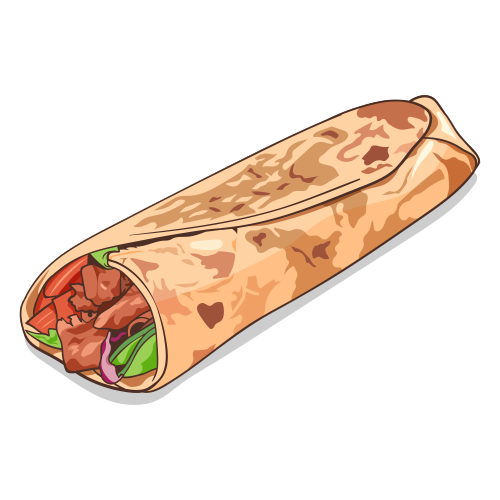

Kebab

Kebab merupakan salah satu makanan yang berasal dari Timur Tengah. Kebab telah lama masuk ke Indonesia dan
dijual sebagai camilan atau jajanan. Banyak masyarakat yang menyukai kebab sebagai sebuah camilan atau
untuk
mengganjal perut.
Berikut bahan-bahan yang dibutuhkan dalam cara membuat kebab satu ini:
- Daging sapi setengah kg, iris melintang
- Bawang putih 2
- Ketumbar setengah sdt
- Cabai merah 3 buah
- Lada secukupnya garam secukupnya
- Margarin 1 sdt
- Bawang bombay 25 gr
- Mayonaise 1 sdm
- Saus tomat 1 sdm
- Timun
Setelah bahan terkumpul, pertama-tama Sedulur masak terlebih dahulu daging sapi. Haluskan cabai merah,
ketumbar, bawang putih dan jahe. Lumuri daging dengan bumbu halus tersebut hingga rata, dan jangan lupa
beri
lada dan garam secukupnya. Marinasi selama 10 menit, lalu panggang daging sapi. Setelah matang, tiriskan
daging sapi dan iris melintang.
Selanjutnya siapkan wajan anti lengket dan oleskan margarin pada wajan. Panggang tortilla hingga
kecoklatan. Lalu angkat. Siapkan margarin dan tumis bawang bombay hingga matang. Letakan tortila di atas
wadah, lalu masukkan daging dan saus, mayonaise, dan ratakan. Gulung tortila dan kebab Turki siap
dinikmati.
Burger
Kebab merupakan salah satu makanan yang berasal dari Timur Tengah. Kebab telah lama masuk ke Indonesia dan
dijual sebagai camilan atau jajanan. Banyak masyarakat yang menyukai kebab sebagai sebuah camilan atau
untuk
mengganjal perut.
Berikut bahan-bahan yang dibutuhkan dalam cara membuat burger satu ini:
- Roti burger sejumlah 2 buah
- Daging burger sapi sejumlah 6 lembar
- Daun selada sejumlah 2 lembar
- Keju lembaran sejumlah 4 lembar
- Tomat sejumlah 1 buah
- Saus sambal botolan secukupnya
- Bawang bombay 25 gr
- Minyak goreng atau margarin kurang lebih sebanyak 1 sendok teh
- Mayonaise secukupnya
Cara pembuatannya :
- Panaskan minyak atau margarin di atas permukaan wajan datar. Lalu masak daging burger hingga matang.
Daging burger perlu dibolak-balik agar kedua sisinya matang merata. Usahakan memasaknya tidak sampai
terlalu kering agar daging burger tetap terasa juicy.
- Setelah matang, sisihkan daging burger.
- Siapkan isian burger lainnya, yakni daun selada dan tomat yang telah dicuci bersih.
Lalu iris-iris tomat.
- Siapkan isian burger lainnya, yakni daun selada dan tomat yang telah dicuci bersih.
Lalu iris-iris tomat. Siapkan piring saji, lalu belah roti burger dan isi dengan daging burger, daun
selada, keju lembaran, dan
irisan tomat dengan posisi tertumpuk.
- Tambahkan mayonnaise dan saus sambal botolan sesuai selera.